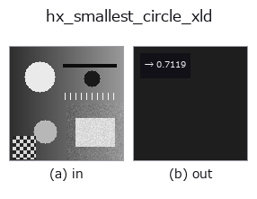

halcon_ext op• 資料種類:contour → feature
• 呼叫:fullseye.apply(img, "hx_smallest_circle_xld", a=0.5, b=0.5)(2-D 的模型是一張圖 + 兩個純量旋鈕 a,b∈[0,1])
• HALCON 對應:smallest_circle_xld(其含義與參數可參考 HALCON 手冊)

*圖為在 128×128 合成輸入上實際執行的輸出。左為輸入，右為輸出。點雲以俯視散點顯示(亮度 = z)，一維序列為折線，體資料為沿 z 的最大值投影，影片為中間影格，複數影像為振幅；無法成像的回傳值直接顯示數值。*
*旋鈕 a 不改變輸出(實測: 0.1 / 0.5 / 0.9 相同)。*
*旋鈕 b 不改變輸出(實測: 0.1 / 0.5 / 0.9 相同)。*
階段(前置運算子 → 本運算子，由左至右):
▸ hx_smallest_circle_xld: stages (docs site)
全部 contour 點最小包圍圓(近似=以重心為心)的半徑,正規化 feature。
> 以下的詳細說明為原文 —— 摘要與標題已翻譯。
contour dict の全 contour の点をまとめ、点の平均(重心)を中心として最も遠い点までの距離 `r` を求め、
`r / max(H, W) を np.float64` で返す。真の最小包含円(中心も最適化)ではなく「重心を中心とする包含円」の
近似で、半径は真値以上になる。
• `a, b` は未使用。
• 点が 1 つも無ければ 0.0(有効な値 0 と区別できない)。
複数 contour があっても 1 つの円で包む(contour ごとではない)。正規化は画像の長辺なので、同じ形でも画像サイズが
変わると値が変わる。円らしさを測りたいなら `hx_fit_circle_contour(残差)や circularity_xld`。
region 版の厳密解は `r2_smallest_circle`。
• 範例資料目錄(下載 URL / 授權) —— 2-D 用 skimage.data(BSD/公有領域)加合成圖,3-D 給出真實資料源(Stanford/PDS 等)的下載 URL。
• 運算子來歷與參考文獻 —— 該運算子族所依據的研究/方法出處。
• 演算法的正典(作者・年份)與用途見上面的族使用指南。
下面的程式已確認可以執行(與圖相同的輸入)。在 Studio 說明中，此區塊會變成按鈕，可當場載入並執行。
threshold 0.50 0.50 sk_find_contours 0.50 0.50 hx_smallest_circle_xld 0.50 0.50
▸ Load this pipeline · Load & run
• gallery2d_halcon_ext — py -3.11 examples/gallery2d_halcon_ext.py
feature 作為輸入)halcon_ext)hx_gen_circle · hx_gen_ellipse · hx_gen_rectangle2 · hx_gen_checker_region · hx_gen_grid_region · hx_gabor · hx_fit_surface1 · hx_fit_surface2
*Provenance: ops.py — 2D 運算子登記表。本條目由 tools/opdocs.py md 自動產生(請勿手動編輯)。*
© 2026 Kazufumi Furuse — Fullseye operator documentation. Licensed under Apache-2.0.
{kind=link}